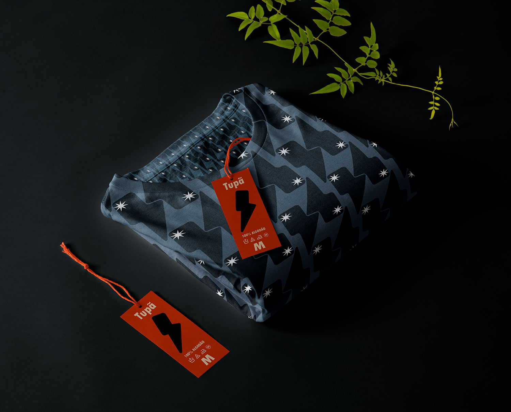
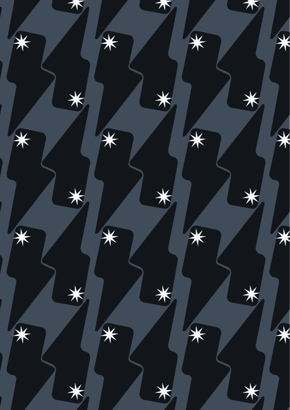
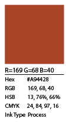
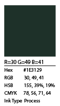
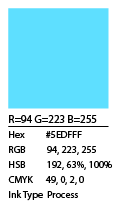
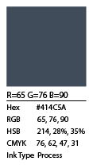
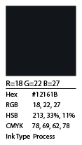
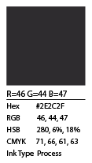
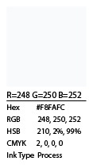

Home
Guaraci
Jaci
Rudá
Tupã
"Tupã, é o deus dos relâmpagos e trovões, assim como o deus supremo do panteão Tupi-Guarani. Tupã é considerado o criador do universo, e, mais especificamente, o criador da luz. Sua residência é o Sol.
Ele é normalmente descrito como um deus benevolente e misericordioso. No entanto ele é famoso por seus muitos casos extraconjugais, gerando assim muitos filhos ilegítimos."
Fonte

Para esta estampa, usei formas básicas e efeitos para criar a força de um raio, que é o foco principal, representando Tupã. A paleta de cores, em tons de preto e branco, foi escolhida para simbolizar a força primordial da criação e o poder dos trovões e relâmpagos. A ausência de cores busca representar sua essência como o deus supremo, enquanto o raio captura o som de sua voz e o poder de sua manifestação sobre o mundo.







